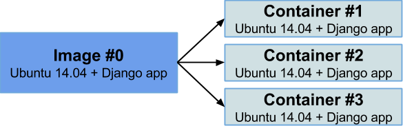
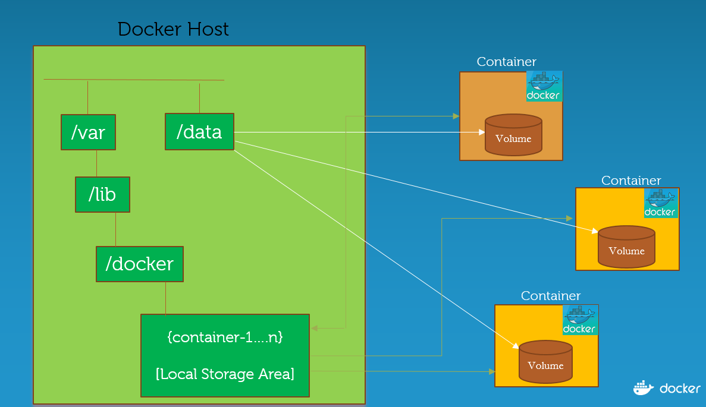

Docker como entorno de Desarrollo
Agenda
- Qué es docker?
- Por qué usar docker?
- Imágenes con Docker commit y Dockerfile.
- Capas de una imagen.
- Volúmenes.
- Caso de uso: Ambiente de Desarrollo SERCOP.
- Docker compose.
- Instalar drupal 8.
- Recomendaciones.
Imágenes y Contenedores

Fuente: https://guiadev.com/introduccion-a-docker/
¿Por qué usar docker?
- Tener un único entorno de Desarrollo
- No más: "En mi máquina si funciona"
- No "ensuciar" mi equipo.
- Desarrolladores se centran en su código
Docker vs VM

Fuente: https://www.edureka.co/blog/what-is-docker-container
Imágenes

Imágenes con docker commit
- Ejecutar una imagen base
- Realizar los cambios necesarios: Instalar vim, crear directorio config, crear directorio config2 e instalar emacs.
- docker diff
- docker commit.
docker commit XXX test_phpday
Imágenes con Dockerfile
FROM centos
RUN yum -y install vim
RUN mkdir config
ADD ./files/config /config
RUN mkdir usuarios
ADD ./files/usuarios /usuarios
RUN yum -y install emacs
docker build -t test_vim_emacs .
Capas de una imagen
docker history xxx
docker run -ti xxx bash
Volúmenes

Fuente: http://collabnix.com/docker-1-12-swarm-mode-persistent-storage-using-nfs/
CU: Ambiente de Desarrollo SERCOP
- Manual de instalación. Más de dos hojas.
- Versión máxima de php 5.6.x.
- Aplica solo para fedora/centos.
- Problemas al actualizar SO.
- En mi máquina si funciona.
Solución
- Dockerfile con todas las instrucciones del manual
- Carpeta local con los archivos .rpm
- Configuraciones necesarias.
Instalar Drupal 8 con docker
docker4drupal
Fuente: https://docker4drupal.readthedocs.io/en/latest//
Recomendaciones
- Probar docker para sus proyectos.
- Uso mínimo de capas al crear imágenes.
- Mantenerse actualizado.
Gracias.
Julio Sarango
jsarangoq@gmail.com